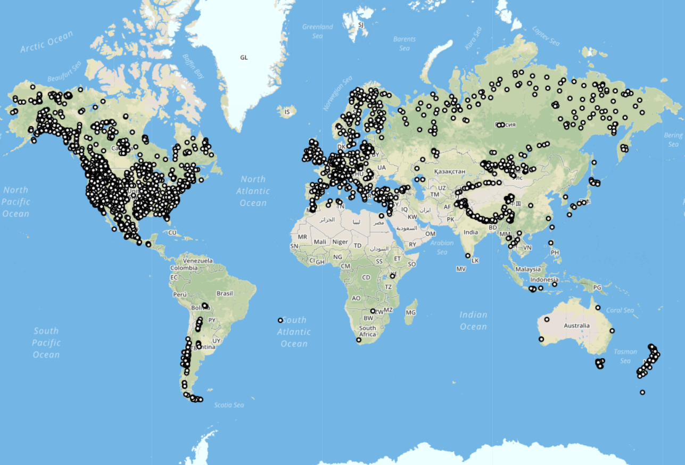
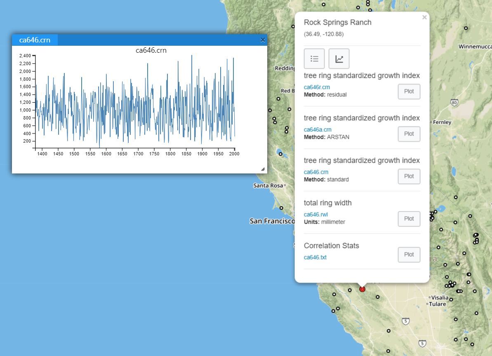
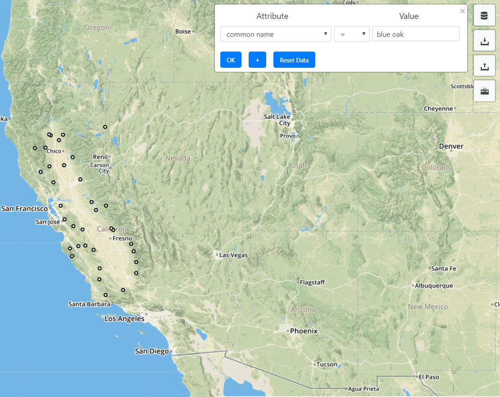

About
I am a recent graduate of the University of Minnesota where I studied geographic information science and computer science. I graduated in May 2018 with a Masters of Geographic Information Science degree and an M.S. minor in computer science. Before my Masters, I graduated from the University of Minnesota with a Bachelor of Science in geography and a Bachelor of Arts in music. My interest in GIS and spatial computing revolves around my deep interest in its development and application to studying the earth system and earth/environmental science data. I'm particularly interested in GIS and spatial computing and their use in climatology, remote sensing, and ecology. Most recently I've become interested in machine learning and deep learning and their application to satellite images and spatial data.I currently work as a post-masters research associate at Oak Ridge National Laboratory in the Geograhpic Information Science and Technology Group. Here, I am a part of the Population Distribution and Dynamics team assisting with the development of high resolution settlement and neighborhood maps from satellite imagery using machine learning and image processing techniques. I am also a member of the ARES project working on developing a technical standard for the incorporation of spectral response information into the National Imagery Transmission Format (NITF).
Projects and Research
Blog
Thoughts, implementations, tutorials, and experiments related to:- geocomputing
- remote sensing
- machine learning
- deep learning
- climatology
- web GIS
- Python
The International Tree-Ring Data Bank (ITRDB) Web-GIS Application
The ITRDB is the primary data repository for tree-ring measurements. The dataset consists of over 4500 study sites that span the entire globe. Each study site is comprised of a collection of measurement files made by meticulously measuring and analyzing the individual tree-ring cores sampled from the trees at the study site. The creators and users of these data are dendrochronologists who study the sequence of annual growth rings in trees to better understand environmental history and climate. This web application allows you visualize, query, and analyze tree-ring chronologies in the ITRDB. The application is built using a wide range of different technologies and programming libraries. The web mapping functionality is accomplished using GeoServer and Leaflet. D3 is used for creating the interactive time-series charts. Postgres and PostGIS are used for storing and querying the spatial data.  
Learn more
DROught MOnitering Toolbox (DROMOT)
The DRought MOnitering Toolbox is a set of tools written in Python for processing spatiotemporal data. Its original purpose was for calculating the Keetch-Byram Drought Index and McArthur's Forest Fire Danger Index but it has since grown to include functionality outside the realm of drought indices. It currently supports both vector and raster spatiotemporal data models and a variety of methods related to remote sensing and climate summary statistics. In the future I plan to make this project into a Python package for easier use and distribution.Learn more